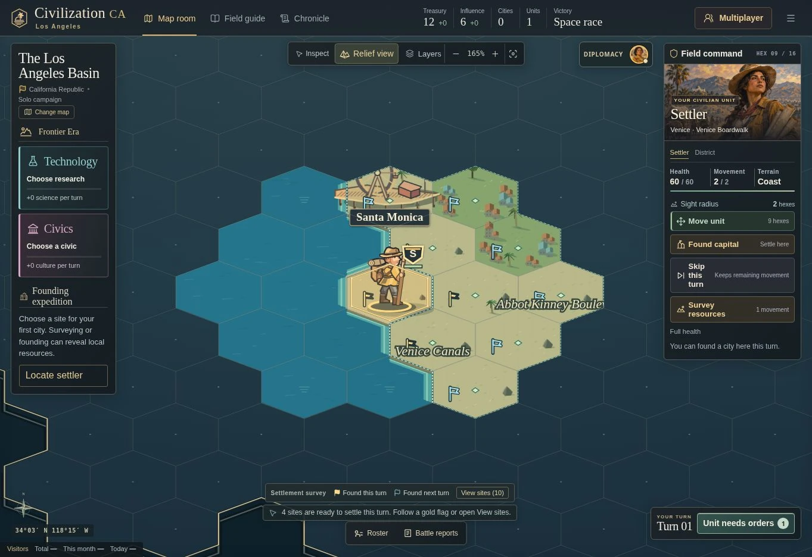

A start on the Los Angeles coast
In this opening, your settler stands between Santa Monica and the Venice Canals. Settle here and your city can start training a scout, or follow the coast a little farther before choosing a site.
Enlarge opening map